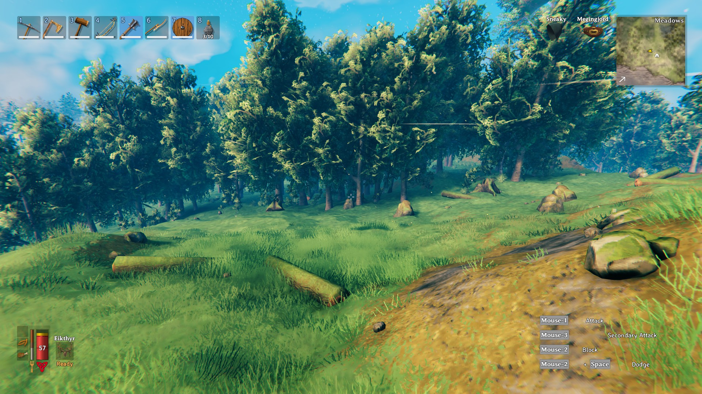
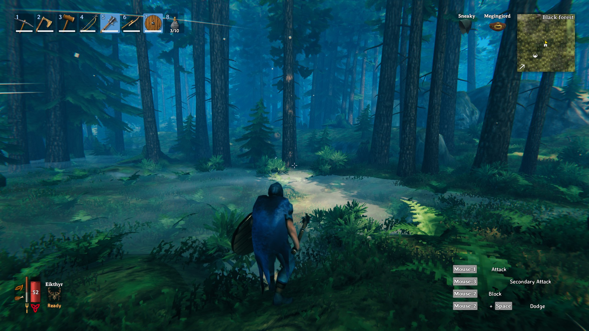
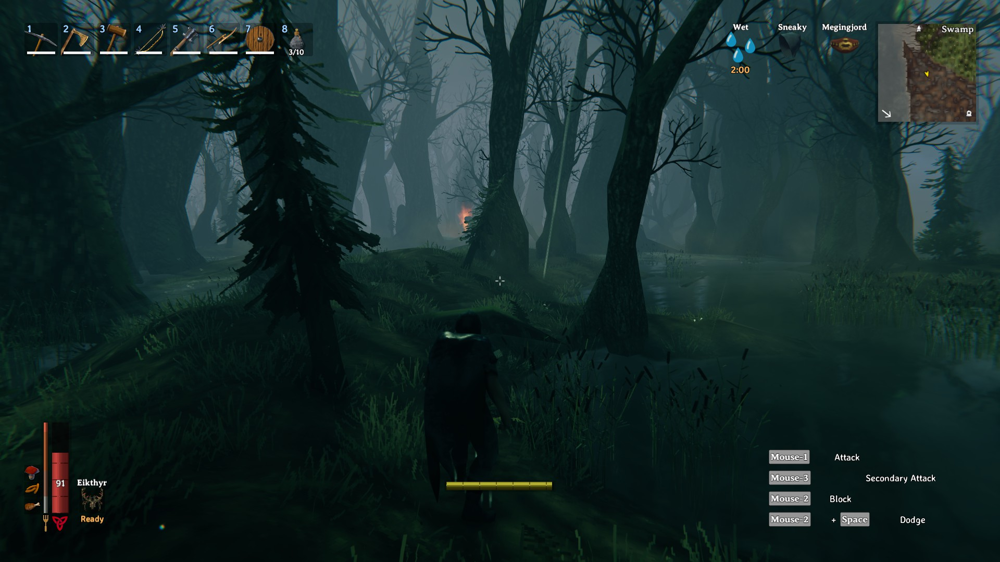
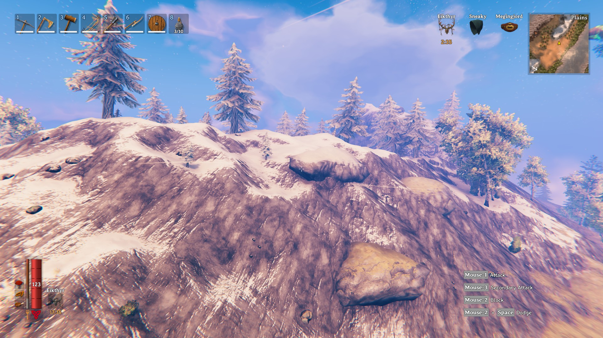
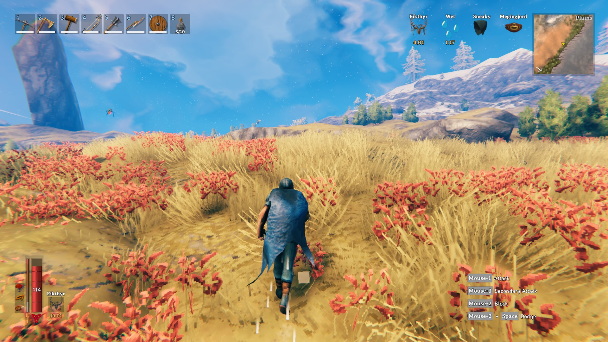
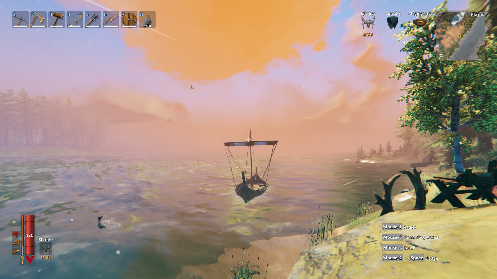

Valheim Biomes
Meadows
The meadows biome is the starting biome. This biome is home to boar, deer, greydwarves, and the boss, Eikthyr. Resources found in this biome are wood, fine wood, stone, and beehives. This biome is generally considered the safest and is good for building your main base.
Black Forest
The black forest is the second biome in progression. This biome is home to stronger greydwarves, skeletons, and trolls. In this biome, you will begin seeing dungeons. Dungeons in this biome are full of skeletons and surtling cores. Other resources in this biome are tin, copper, and core wood.
Swamp
The swamp is the third biome in progression. This biome is home to leeches, draugr, blobs, and surtlings. This biome has a new dungeon, called krypts. The krypts have iron and other rare loot. Other resources found in the swamp are ancient wood and ooze.
Mountains
The mountains are the fourth biome in progression. Mountains are home to wolves, drakes, stone golems, and fenrings. Resources found in this biome are silver and obsidian.
Plains
The plains biome is fifth in progression. This biome is home to fulings, lox, deathsquitos, and gulls. Resources that can be found here are black metal, barley, flax, and cloudberries.
Ocean
The oceans biome is one you will be in at all stages of the game. It separates most landmasses, and traveling by boat is the most efficient way of traveling long distances. In this biome, you can find turtle islands, which are islands on the back of giant turtles where you can harvest ancient barnacles. The only hostile mob found in this biome is the sea serpent, which drops its scales and meat when killed.